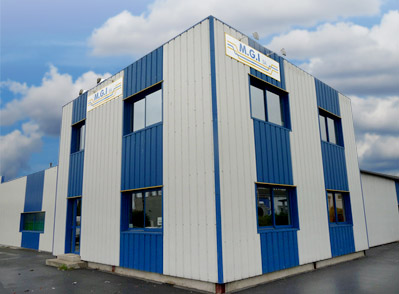

Depuis sa création en 1977, la société M.G.I. s’est fixée pour objectif :
compétence, rapidité, précision, et qualité
Certifiée EN9100:2018 et ISO9001:2015, M.G.I. investit sans cesse dans de nouvelles technologies :
- Informatique CFAO
- Transmission de données
- Contrôles
- Machines à commandes numériques
- l’Usinage à Grande Vitesse (UGV)
- Ateliers climatisés
L’UGV, utilisé de plus en plus dans les procédés de fabrication moderne, conduit à une réduction importante du temps d’usinage, une simplification de l’unité de production, une flexibilité plus étendue et une haute précision.
Le besoin de satisfaire toutes demandes et l’expérience acquise, notamment dans les domaines de l’aéronautique, de l'industrie, du médical, du nucléaire, de l'emballage et du conditionnement industriel, ont développé la spécificité technique et le savoir-faire de M.G.I. dont les réponses sont idéales aux préocupations du marché actuel.

- Responsable : M. CHITEL
- Effectif : 14 personnes
- Superficie : 1500m²
- Ateliers climatisés